A Database Management System (DBMS) is a software system that is designed to manage and organize data in a structured manner. It allows users to create, modify, and query a database, as well as manage the security and access controls for that database.
What is Database
The database is a collection of inter-related data which is used to retrieve, insert and delete the data efficiently. It is also used to organize the data in the form of a table, schema, views, and reports, etc.
For example: The college Database organizes the data about the admin, staff, students and faculty etc.
Advantages of DBMS
Better Data Transferring: Database management creates a place where users have an advantage of more and better-managed data. Thus making it possible for end-users to have a quick look and to respond fast to any changes made in their environment.
Better Data Security: The more accessible and usable the database, the more it is prone to security issues. As the number of users increases, the data transferring or data sharing rate also increases thus increasing the risk of data security. It is widely used in the corporate world where companies invest money, time, and effort in large amounts to ensure data is secure and is used properly. A Database Management System (DBMS) provides a better platform for data privacy and security policies thus, helping companies to improve Data Security.
Minimized Data Inconsistency: Data inconsistency occurs between files when different versions of the same data appear in different places.
Data abstraction: The major purpose of a database system is to provide users with an abstract view of the data. Since many complex algorithms are used by the developers to increase the efficiency of databases that are being hidden by the users through various data abstraction levels to allow users to easily interact with the system.
Reduction in data Redundancy: When working with a structured database, DBMS provides the feature to prevent the input of duplicate items in the database. for e.g. – If there are two same students in different rows, then one of the duplicate data will be deleted.
Disadvantages of DBMS
Cost of hardware and software: This is the first disadvantage of DBMS. This is because to run the DBMS, there is must need for high-speed processors and large memory size. Nowadays, in every field, a large amount of data needs to be stored safely with security. But nowadays, the cost of a high-speed processor and large memory storage is very expensive in hardware and software.
Frequency Upgrade: we need to stay up-to-date about the latest technologies and developments in the market. The DBMS vendors frequently upgrade the products to add new functionality to the systems. New upgrade versions of the software often come bundled.
Scalability: The DBMS system may need help to handle increasing database size. In order to understand this, let’s go through an example. Suppose you started a startup a few years back, and the organization has grown significantly. Due to the growth, you would have a larger database in comparison to the early days.
Huge Size: A database contains a large amount of data, especially for bigger organisations. This data may even increase as more data is updated into the database. All of these leads to a large size of the database.
Database Failure: All the relevant data for any company is stored in a database. So it is imperative that the database works in optimal condition and there are no failures. A database failure can be catastrophic and can lead to loss or corruption of very important data.
File System vs DBMS:
Basis
File System
DBMS
Structure
The file system is software that manages and organizes the files in a storage medium within a computer.
DBMS is software for managing the database.
Data Redundancy
Redundant data can be present in a file system.
In DBMS there is no redundant data.
Backup and Recovery
It doesn't provide backup and recovery of data if it is lost.
It provides backup and recovery of data even if it is lost.
Query processing
There is no efficient query processing in the file system.
Efficient query processing is there in DBMS.
Consistency
There is less data consistency in the file system.
There is more data consistency because of the process of normalization.
Complexity
It is less complex as compared to DBMS.
It has more complexity in handling as compared to the file system.
Security Constraints
File systems provide less security in comparison to DBMS.
DBMS has more security mechanisms as compared to file systems.
User Access
Only one user can access data at a time.
Multiple users can access data at a time.
Sharing
Data is distributed in many files. So, not easy to share data
Due to centralized nature sharing is easy
Integrity Constraints
Integrity Constraints are difficult to implement
Integrity constraints are easy to implement
Entity Relationship Model (ERM)
Entity Relational model is a model for identifying entities to be represented in the database and representation of how those entities are related. It specifies enterprise schema that represents the overall logical structure of a database graphically.
Features of ERM:
E-R diagrams are used to represent E-R model in a database, which makes them easy to be converted into relations (tables).
E-R diagrams provide the purpose of real-world modeling of objects which makes them intently useful.
E-R diagrams require no technical knowledge and no hardware support.
These diagrams are very easy to understand and easy to create even by a naive user.
It gives a standard solution of visualizing the data logically.
Components of ER Model
Entity: An Entity may be an object with a physical existence a particular person, car, house, or employee or it may be an object with a conceptual existence a company, a job, or a university course.
Entity type: The entity type is the fundamental building block for describing the structure of data with the Entity Data Model (EDM).
Entity set: An Entity is an object of Entity Type and a set of all entities is called as an entity set.
Types of Entities:
Strong entity: A strong entity is not dependent on any other entity in the schema. A strong entity will always have a primary key. Strong entities are represented by a single rectangle. The relationship of two strong entities is represented by a single diamond.
Various strong entities, when combined together, create a strong entity set.
Weak type: A weak entity is dependent on a strong entity to ensure its existence. Unlike a strong entity, a weak entity does not have any primary key. It instead has a partial discriminator key. A weak entity is represented by a double rectangle.
The relation between one strong and one weak entity is represented by a double diamond. This relationship is also known as identifying relationship.
Attributes
Attributes are the properties that define the entity type. For example, Roll_No, Name, DOB, Age, Address, Mobile_No are the attributes that define entity type Student. In ER diagram, the attribute is represented by an oval.
Types of attributes:
Simple attribute: An attribute that cannot be further subdivided into components is a simple attribute.
Key attribute: The attribute which uniquely identifies each entity in the entity set is called key attribute.For example, Roll_No will be unique for each student. In ER diagram, key attribute is represented by an oval with underlying lines.
Composite attribute: An attribute that composed of many other attribute is called as composite attribute. For example, Address attribute of student Entity type consists of Street, City, State, and Country. In ER diagram, composite attribute is represented by an oval comprising of ovals.
Multivalued attribute: An attribute consisting more than one value for a given entity. For example, Phone_No (can be more than one for a given student). In ER diagram, a multivalued attribute is represented by a double oval.
Multivalued attribute: An attribute consisting more than one value for a given entity. For example, Phone_No (can be more than one for a given student). In ER diagram, a multivalued attribute is represented by a double oval.
Derived attribute: An attribute that can be derived from other attributes of the entity type is known as a derived attribute. e.g.; Age (can be derived from DOB). In ER diagram, the derived attribute is represented by a dashed oval.
Relational Model
A relational database is a type of database that stores and provides access to data points that are related to one another. Relational databases are based on the relational model, an intuitive, straightforward way of representing data in tables.
Important Terms:
Atttibute: Attributes are the properties that define a relation.
Example:
ROLL_NO, NAME
Relation Schema: A relation schema represents the name of the relation with its attributes.
Example:
STUDENT (ROLL_NO, NAME, ADDRESS, PHONE, and AGE) is the relation schema for STUDENT
Tuple: Each row in the relation is known as a tuple.
Relation Instance: The set of tuples of a relation at a particular instance of time is called a relation instance.
Degree: The number of attributes in the relation is known as the degree of the relation.
Cardinality: The number of tuples in a relation is known as cardinality.
Column: The column represents the set of values for a particular attribute.
NULL Values: The value which is not known or unavailable is called a NULL value.
What are Constraints
Constraints is a technique through which we can restrict a particular column or multiple columns of a table.
Constraints can be categorized into two types:
Table level constraints:
A table level constraint can be define when we are creating a table or modifing the structure of the table.
Column level constraints:
A column level constraint can only be define when we are definig a column in the table.
Types of constriants:
Primary Key: We can define a particular column or multiple columns as a primary key in the table.
We can't have more than one primary key in the table.
When we defined a primary key then those column or columns will be unique and can't have a NULL value within it.
A primary is a column level as well as table level constraint
Check: This constraint helps to validate the values of a column to meet a particular condition. That is, it helps to ensure that the value stored in a column meets a specific condition.
Not Null: This constraint tells that we cannot store a null value in a column. That is, if a column is specified as NOT NULL then we will not be able to store null in this particular column any more.
Syntax:
CREATE TABLE table_name(column_name1 datatype NOT NULL, column_name_n datatype);
Example:
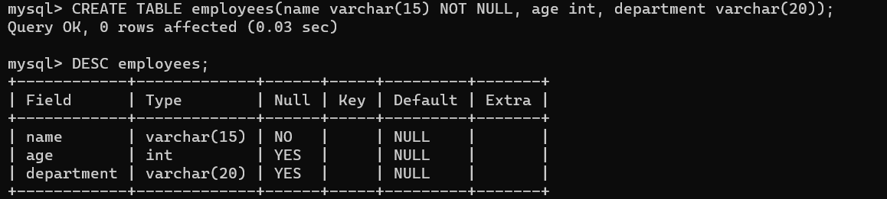
UNIQUE: This constraint when specified with a column, tells that all the values in the column must be unique. That is, the values in any row of a column must not be repeated.
Structured Query Language (SQL) is a standard Database language that is used to create, maintain and retrieve the relational database. SQL uses certain commands like Create, Drop, Insert, etc. to carry out the required tasks.
These SQL commands are mainly categorized into five categories as:
DDL - Data Definition Language
DQL - Data Query Language
DML - Data Manipulation Language
DCL - Data Control Language
TCL - Transaction Control Language
DDL (Data Definition Language):
It simply deals with descriptions of the database schema and is used to create and modify the structure of database objects in the database. DDL is a set of SQL commands used to create, modify, and delete database structures but not data.
DDL commands:
CREATE: It is used to create a new table in the database.
DROP: It is used to delete both the structure and record stored in the table.
Syntax:
DROP TABLE table_name;
Example:
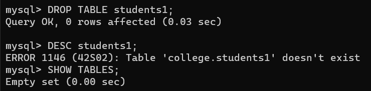
ALTER: This is used to alter the structure of the database.
* To add a new column in the table:
Syntax:
ALTER TABLE table_name ADD(column_name datatype,[...]);
Example:
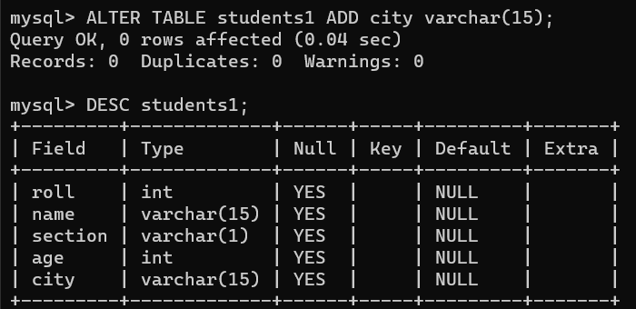
Drop column from the table:
Syntax:
ALTER TABLE table_name DROP COLUMN column_name;
Example:
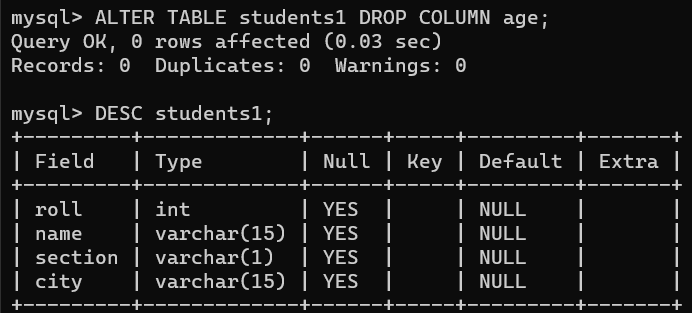
Modify column:
Syntax:
ALTER TABLE table_name MODIFY column_name datatype;
Example:
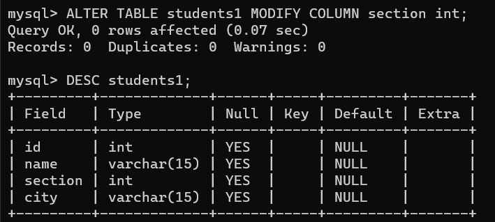
TRUNCATE: This is used to remove all records from a table, including all spaces allocated for the records are removed.
Syntax:
TRUNCATE TABLE table_name;
Example:
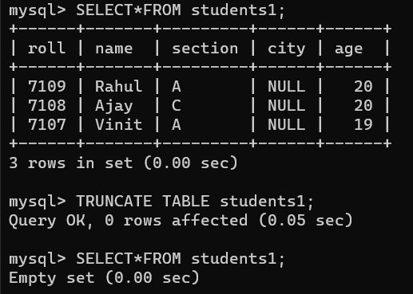
RENAME: This is used to rename an object existing in the database.
Syntax:
RENAME old_table_name TO new_table_name;
Example:
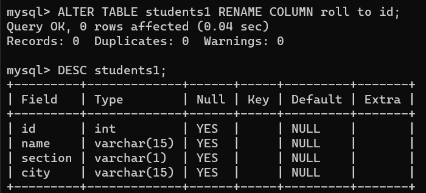
DQL (Data Query Language):
The DML commands in Structured Query Language change the data present in the SQL database. We can easily access, store, modify, update and delete the existing records from the database using DML commands.
DML commands:
SELECT: The SELECT command shows the records of the specified table. It also shows the particular record of a particular column by using the WHERE clause.
Syntax:
SELECT column_name1,...,column_name_n FROM table_name;
Example:
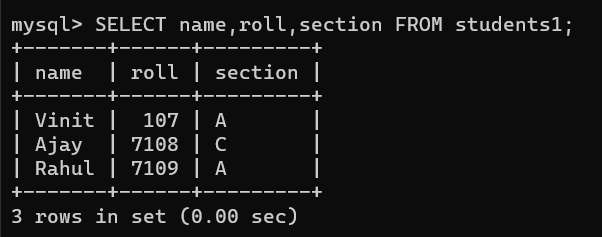
DML (Data Manipulation Language):
The DML commands in Structured Query Language change the data present in the SQL database. We can easily access, store, modify, update and delete the existing records from the database using DML commands.
DML commands:
INSERT: This allows users to insert data in database tables.
Syntax:
INSERT INTO table_name(column_name1,...,column_name_n) VALUES(value_1,...,value_n);
Example:
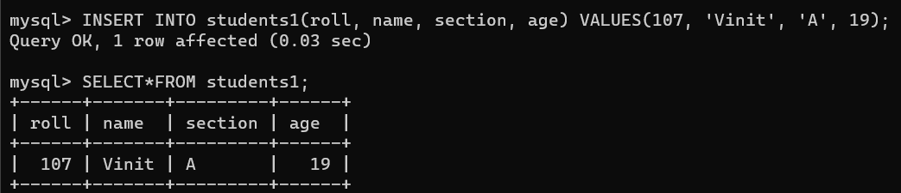
UPDATE: This allows users to update or modify the existing data in database tables.
Syntax:
UPDATE table_name SET[column_name1 = value_1,...,column_name_n = value_n] WHERE condition;
Example:
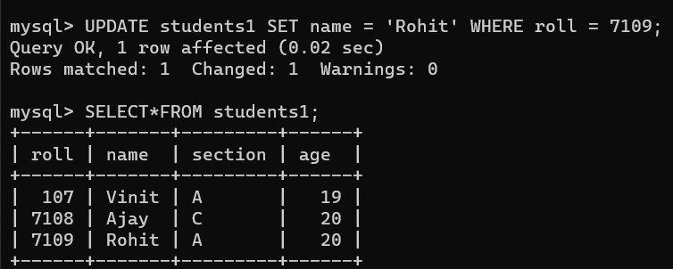
DELETE: This allows users to remove single or multiple existing records from the database tables.
Syntax:
DELETE table_name WHERE condition;
Example:
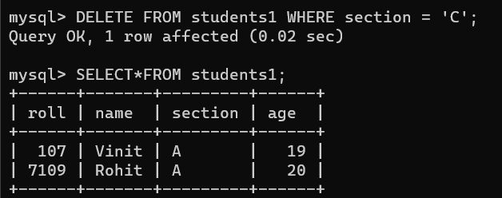
DCL (Data Control Language):
DCL includes commands such as GRANT and REVOKE which mainly deal with the rights, permissions, and other controls of the database system.
DCL commands:
GRANT: This command gives users access privileges to the database.
Syntax:
GRANT privileges_names ON object_name TO user_name;
REVOKE: This command withdraws the user's access privileges given by using the GRANT command.
Syntax:
REVOKE privileges_names ON object_name from user_name;
TCL (Transaction Control Language):
TCL commands can only use with DML commands like INSERT, DELETE and UPDATE only. These operations are automatically committed in the database that's why they cannot be used while creating tables or dropping them.
TCL commands:
COMMIT: Commit command is used to save all the transactions to the database.
Syntax:
COMMIT;
Example:
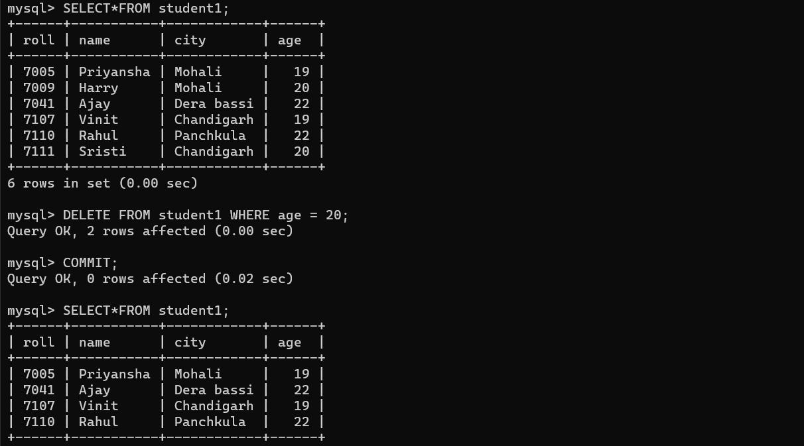
ROLL BACK: Rollback command is used to undo transactions that have not already been saved to the database.
Syntax:
ROLLBACK;
Example:
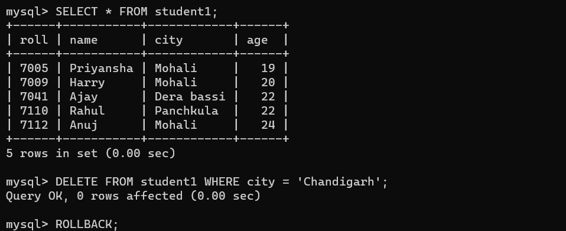
SAVEPOINT: It is used to roll the transaction back to a certain point without rolling back the entire transaction.
Syntax:
Example:
SAVEPOINT savepoint_name;
What is PL/SQL
PL/SQL is a block structured language that enables developers to combine the power of SQL with procedural statements.All the statements of a block are passed to oracle engine all at once which increases processing speed and decreases the traffic.
Features of PL/SQL:
PL/SQL is basically a procedural language, which provides the functionality of decision making, iteration and many more features of procedural programming languages.
PL/SQL can execute a number of queries in one block using single command.
One can create a PL/SQL unit such as procedures, functions, packages, triggers, and types, which are stored in the database for reuse by applications.
Applications written in PL/SQL are portable to computer hardware or operating system where Oracle is operational.
PL/SQL Offers extensive error checking.
Structure of PL/SQL Block:
PL/SQL extends SQL by adding constructs found in procedural languages, resulting in a structural language that is more powerful than SQL. The basic unit in PL/SQL is a block. All PL/SQL programs are made up of blocks, which can be nested within each other.
DECLARE
declaration statements;
BEGIN
executable statements
EXCEPTIONS
exception handling statements
END;
PL/SQL identifiers:
There are several PL/SQL identifiers such as variables, constants, procedures, cursors, triggers etc.
Variables: Like several other programming languages, variables in PL/SQL must be declared prior to its use. They should have a valid name and data type as well. Syntax for declaration of variables:
variable_name datatype [NOT NULL := value];
Example:
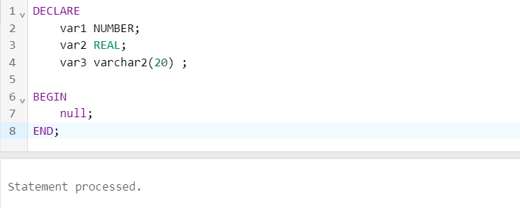
Constants: A constant is a value that remains unchanged throughout the program. It is a user-defined literal value. It can be declared and used instead of actual values.:
constant_name CONSTANT datatype := VALUE;
Example:
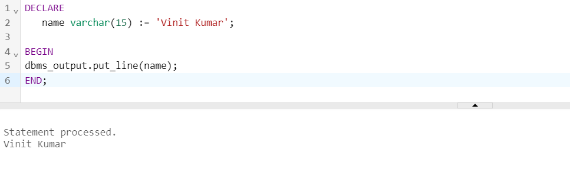
<>
Procedures: A procedure or function is a schema object that logically groups a set of SQL and other PL/SQL programming language statements together to perform a specific task. Procedures and functions are created in a user's schema and stored in a database for continued use.
CREATE [OR REPLACE] PROCEDURE procedure_name
[(parameter_name [IN | OUT | IN OUT] type [, ...])]
{IS | AS}
BEGIN
procedure_body
END procedure_name;
Example:
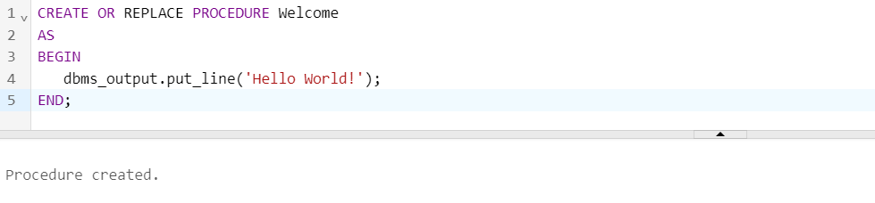
Cursors: To execute SQL statements, a work area is used by the Oracle engine for its internal processing and storing the information. This work area is private to SQL's operations. The 'Cursor' is the PL/SQL construct that allows the user to name the work area and access the stored information in it.
Types of Cursors:
Cursors are classified depending on the circumstances in which they are opened.
Implicit Cursor: If the Oracle engine opened a cursor for its internal processing it is known as an Implicit Cursor. It is created “automatically” for the user by Oracle when a query is executed and is simpler to code.
Explicit Cursor: A Cursor can also be opened for processing data through a PL/SQL block, on demand. Such a user-defined cursor is known as an Explicit Cursor.
General syntax for creating a Cursor:
* Declare a cursor:
CURSOR cursor_name IS select_statement;
* Open the cursor:
OPEN cursor_name;
* Fetching the cursor:
FETCH cursor_name INTO variable_list;
* Close the cursor:
CLOSE cursor_name;
Complete Cursor syntax:
DECLARE variables;
records; create a cursor;
BEGIN
OPEN cursor; FETCH cursor; process the records; CLOSE cursor;
END;
Triggers: Triggers are stored programs, which are automatically executed or fired when some event occurs. It could be defined on the table, view, schema, or database with which the event is associated.
Advantages of Triggers
Trigger generates some derived column values automatically.
Enforces referential integrity
Event logging and storing information on table access
Imposing security authorizations
Preventing invalid transactions
Syntax:
CREATE [OR REPLACE ] TRIGGER trigger_name
{BEFORE | AFTER | INSTEAD OF }
{INSERT [OR] | UPDATE [OR] | DELETE}
[OF col_name]
ON table_name
[REFERENCING OLD AS o NEW AS n]
[FOR EACH ROW]
WHEN (condition)
DECLARE
Declaration-statements
BEGIN
Executable-statements
EXCEPTION
Exception-handling-statements
END;